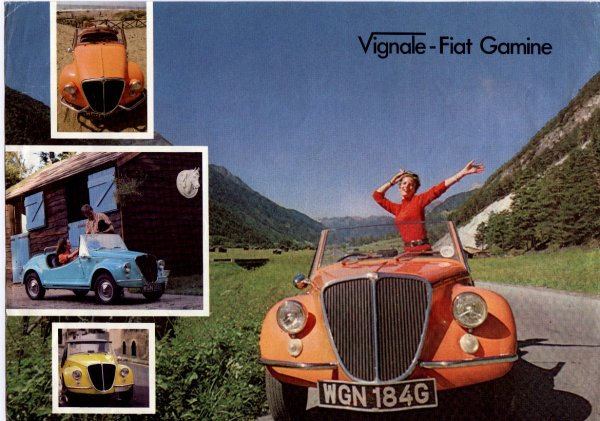

English brochure
English Brochure
The F. Demetriou Group's UK sales brochure for the Vignale-Fiat Gamine.
Original brochure text:
The F. Demetriou Group presents the Vignale-Fiat Gamine. Inspired by the Fiat Balilla sports car of the 1930s, Vignale of Turin has created the Gamine, a flirty two-seater in a range of daring new colours. Based on the famous Fiat 500, the most successful small car ever made, the Gamine is as practical and reliable as it is fun to drive.
BODY: all-steel, two-door, two-seater, convertible; removable hood incorporating large, flexible rear window, zip-in sidescreens tensioned by swivelling quarter lights; fitted compartment for hood, with tonneau cover; heater; lockable glove compartment and boot; leather-covered steering wheel; racing-type external mirror; choice of six special colours with black interior — Polar White, Portobello Yellow, Pacific Coral, Hollywood Green, Roman Red, Adriatic Blue. Optional: hardtop, cast alloy wheels.
TECHNICAL DATA: rear-mounted two-cylinder air-cooled engine, 499.5cc, 22hp (SAE), recirculating exhaust system. Independent suspension front and rear. Four forward gears and reverse. Automatically adjusted brakes. 12-volt electrics. Minimum maintenance — only two grease points. Speed: 60mph plus. Fuel consumption: 60mpg plus.
DIMENSIONS: length 10ft, width 4ft 3in, height 3ft 10½in, weight 1074lb, fuel tank 4½ gallons.
